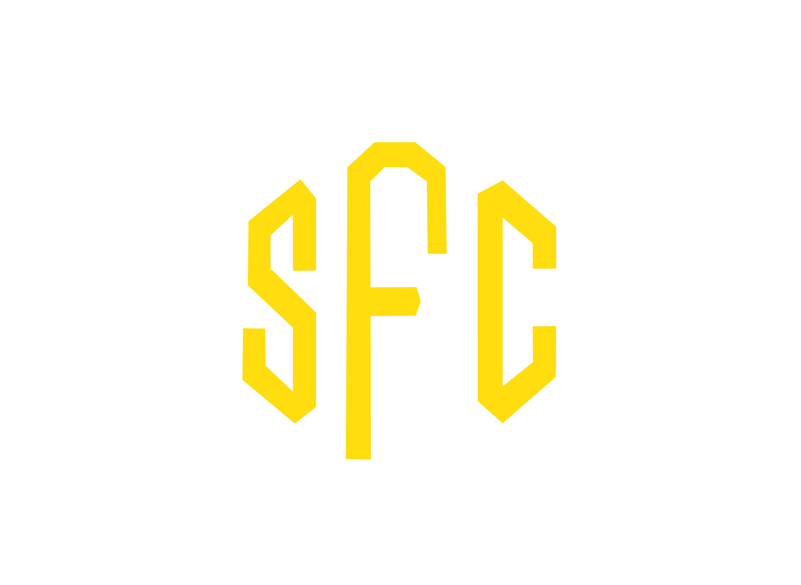
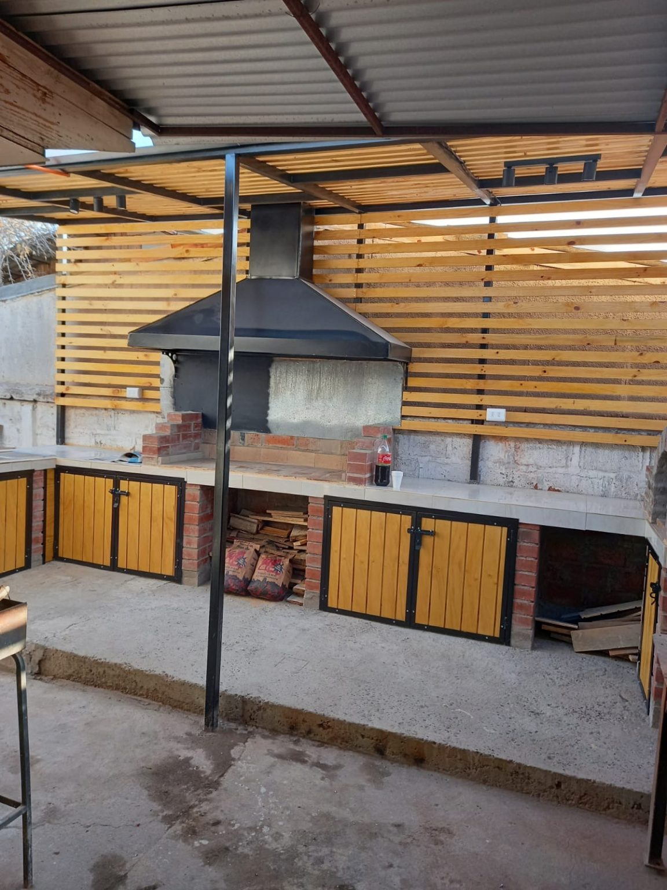
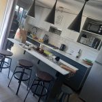
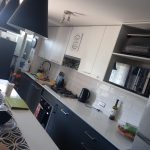
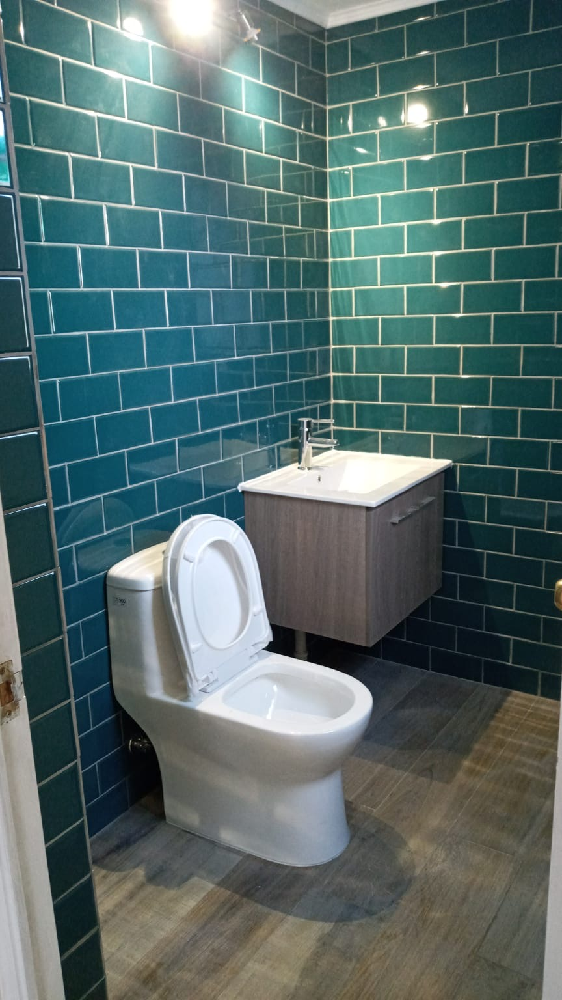
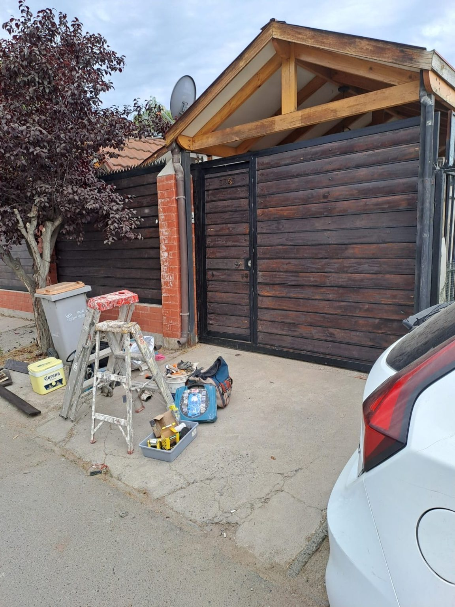
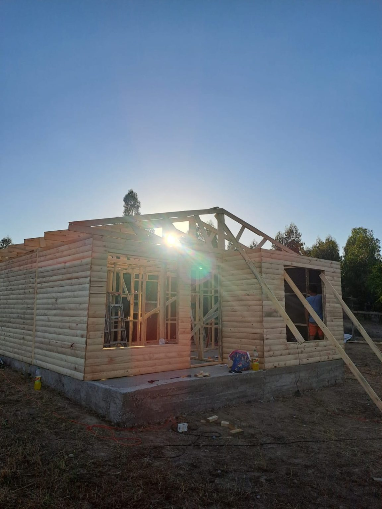

CotizarAyuda y atención inmediata para cualquier requerimiento en tu vivienda o lugar de trabajo: construcción, remodelación y terminaciones.
Cotiza por WhatsApp





Coordinamos una visita previa contigo para orientarte y buscar en conjunto la opción más adecuada para llevar a cabo tu proyecto, que por supuesto mejorará tu calidad de vida.
En septiembre de 2014 decidieron comenzar a trabajar de manera independiente para facilitar el día a día de quien tenga un requerimiento.
El Cid N.° 1804
Maipú, Santiago